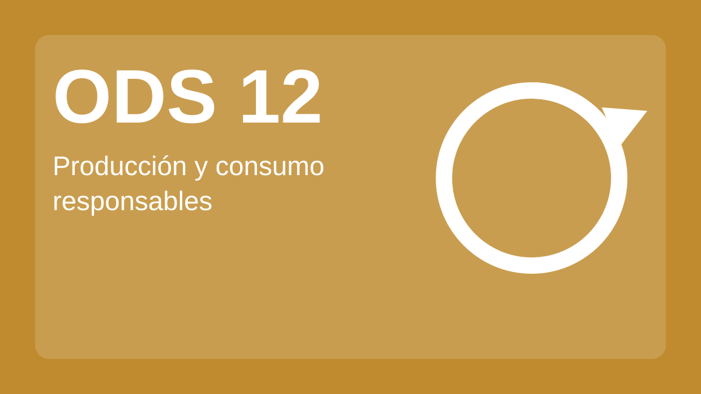
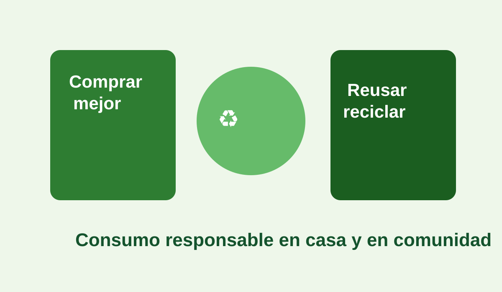
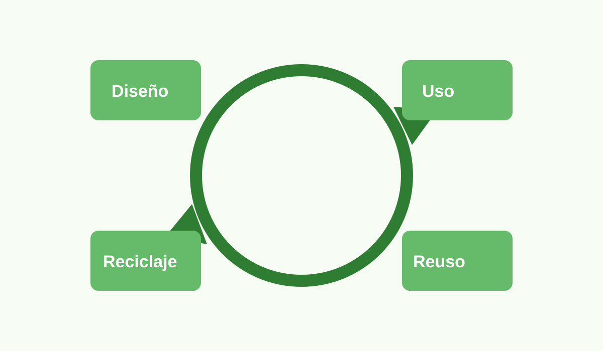
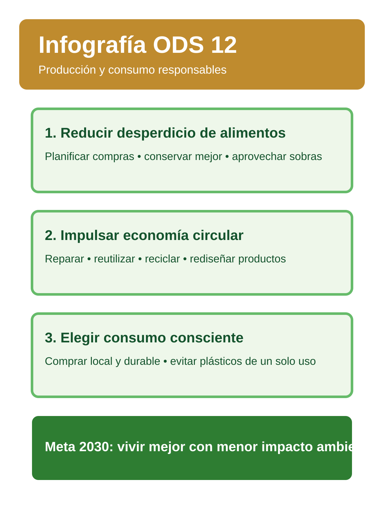

El Objetivo de Desarrollo Sostenible 12 impulsa hábitos de compra, uso y producción que cuidan los recursos naturales y reducen el impacto ambiental.

Para 2030 se propone disminuir a la mitad el desperdicio de alimentos por persona, mejorando la planificación de compras y la conservación de productos.

La prevención, reutilización y reciclaje permiten aprovechar mejor los materiales, reduciendo la presión sobre ecosistemas y la contaminación.

Es clave contar con información clara para elegir productos más duraderos, locales y de menor impacto ambiental.
